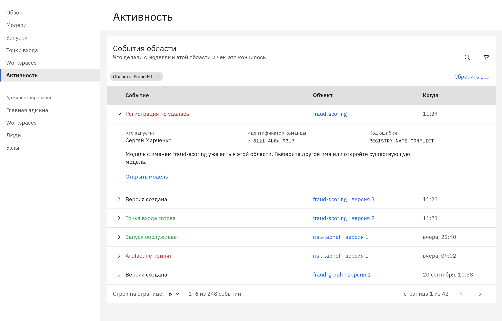

Промышленность
Прогноз поломок оборудования
Ремонт начинается после остановки линии.
Предиктивные
Внеплановые простои в месяц, часы простоя
Атриум запускает предиктивные и генеративные модели на внутренних серверах компании. Открытые и собственные, с ролями, журналом действий и доступом по токену.
Схема
Большинство моделей на рынке открытые или дообучены на открытых. Данные защищает место, где модель работает, и правила доступа к ней.
Остаются на внутренних серверах компании. Выход в интернет не нужен.
Выбирает компания: открытую или собственную, предиктивную или генеративную.
Каждая команда работает в своём пространстве. Программы обращаются к модели по токену с лимитом запросов.
Журнал показывает, кто запустил модель, кто выдал права и кто остановил старую версию.
крупных российских компаний уже используют генеративный ИИ хотя бы в одной функции.
«Яков и Партнёры» и Яндекс, «ИИ в России 2025». Источник
Права задаются один раз. Дальше команды запускают модели сами, без заявок и ручной настройки серверов.
Модели и данные внутри контура. Видно, у кого какая роль и кто что сделал с каждой моделью.
Команда добавляет модель из браузера и получает адрес, по которому к ней обращаются программы компании.
Примеры задач по отраслям. Эффект считается по показателям самой компании.
Все сценарииПромышленность
Ремонт начинается после остановки линии.
Предиктивные
Внеплановые простои в месяц, часы простоя
Страхование
Заявления и справки читают вручную, дело ждёт днями.
Генеративные
Время обработки одного дела
Банки
Подозрительную операцию замечают после списания денег.
Предиктивные
Доля ложных срабатываний, операции на ручной проверке
Атриум стоит между программами компании и моделями. Всё работает на её серверах.

По данным MIT, готовые решения специализированных поставщиков доходят до результата примерно в 67% случаев. Собственные разработки примерно втрое реже.
Атриум берёт на себя запуск, права и журнал. Команды занимаются своими задачами.
MIT NANDA, «The GenAI Divide», июль 2025, выборка американских компаний. Источник
Подробности и сроки по каждому пункту на странице для ИТ.
Для ИТ и безопасностиАтриум ставится на ИИ-серверы производителя. Для производителей открыта партнёрская программа.
Производителям серверовИнтегратор ставит Атриум в контуре компании, подключает программы и сопровождает.
ИнтеграторамУстановка вместе со специалистами компании. Поддержку программы ведёт команда Атриума.
С чего начатьС одной задачи и одной команды.
По видеосвязи, на задаче компании.
Установка на серверах компании для одной команды и одной модели.
Подключение остальных команд и программ.
Нет. Атриум и модели работают на внутренних серверах без выхода наружу.
Предиктивные и генеративные, открытые и собственные. Проверенные форматы перечислены на странице для ИТ.
Для пробы ориентир такой: три машины по 8 ядер и 32 ГБ памяти. Генеративным моделям нужны видеокарты.
Пока нет. Включение в реестр запланировано на I квартал 2027 года.
Цена зависит от числа пользователей и видеокарт. Её называют после разговора о задаче.
Атриум ставится вместе со специалистами компании или через интегратора. Поддержку программы ведёт команда Атриума.